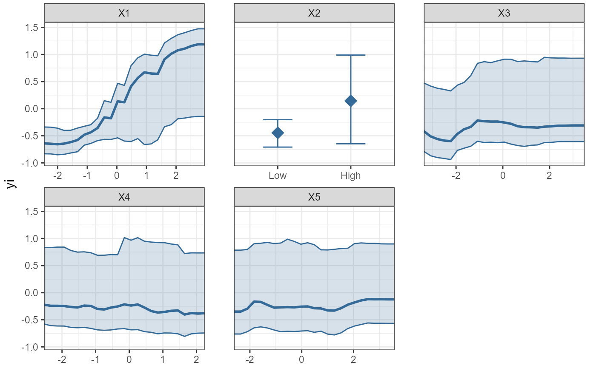

PartialDependence.RdPartial dependence plots
PartialDependence(
x,
vars = NULL,
pi = NULL,
rawdata = FALSE,
bw = FALSE,
resolution = NULL,
moderator = NULL,
mod_levels = NULL,
output = "plot",
...
)Model object.
Character vector containing the moderator names for which to plot partial dependence plots. If empty, all moderators are plotted.
Numeric (0-1). What percentile interval should be plotted for the
partial dependence predictions? Defaults to NULL. To obtain a 95% interval,
set to .95.
Logical, indicating whether to plot weighted raw data.
Defaults to FALSE. Uses the same weights as the model object passed to the
x argument.
Logical, indicating whether the plot should be black and white, or color.
Integer vector of length two, giving the resolution of the partial predictions. The first element indicates the resolution of the partial predictions; for Monte-Carlo integration, the second element gives the number of rows of the data to be sampled without replacement when averaging over values of the other predictors.
Atomic character vector, referencing the name of one
variable in the model. Results in partial prediction plots, conditional on
the moderator. If moderator references a factor variable, separate
lines/boxplots are plotted for each factor level. If moderator
references a numeric variable, heatmaps are plotted - unless the moderator is
categorized using the mod_levels argument.
Vector. If moderator is continuous, specify
thresholds for the cut function. The continuous moderator
is categorized, and predictions are based on the median moderator value
within each category. You can call quantile to cut the
moderator at specific quantiles. If moderator is a factor variable,
you can use mod_levels to specify a character vector with the factor
levels to retain in the plot (i.e., dropping the other factor levels).
Character. What type of output should be returned? Defaults to
"plot", which returns and plots a gtable object. To obtain a list of
ggplot objects instead, provide the argument "list".
Additional arguments to be passed to and from functions.
A gtable object.
Plots partial dependence plots (predicted effect size as a function of the
value of each predictor variable) for a MetaForest- or rma model object. For
rma models, it is advisable to mean-center numeric predictors, and to not
include plot_int effects, except when the rma model is bivariate, and the
plot_int argument is set to TRUE.
# Partial dependence plot for MetaForest() model:
set.seed(42)
data <- SimulateSMD(k_train = 200, model = es * x[, 1] + es * x[, 2] + es *
x[, 1] * x[, 2])$training
data$X2 <- cut(data$X2, breaks = 2, labels = c("Low", "High"))
mf.random <- MetaForest(formula = yi ~ ., data = data,
whichweights = "random", method = "DL",
tau2 = 0.2450)
# Examine univariate partial dependence plot for all variables in the model:
PartialDependence(mf.random, pi = .8)

if (FALSE) {
# Examine bivariate partial dependence plot the plot_int between X1 and X2:
pd.plot <- PartialDependence(mf.random, vars = c("X1", "X2"), plot_int = TRUE)
# Save to pdf file
pdf("pd_plot.pdf")
grid.draw(pd.plot)
dev.off()
# Partial dependence plot for metafor rma() model:
dat <- escalc(measure="RR", ai=tpos, bi=tneg, ci=cpos, di=cneg, data=dat.bcg)
dat$yi <- as.numeric(dat$yi)
dat$alloc <- factor(dat$alloc)
dat$ablat_d <- cut(dat$ablat, breaks = 2, labels = c("low", "high"))
# Demonstrate partial dependence plot for a bivariate plot_int
rma.model.int <- rma(yi, vi, mods=cbind(ablat, tpos),
data=dat, method="REML")
PartialDependence(rma.model.int, rawdata = TRUE, pi = .95,
plot_int = TRUE)
# Compare partial dependence for metaforest and rma
dat2 <- dat
dat2[3:7] <- lapply(dat2[3:7],
function(x){as.numeric(scale(x, scale = FALSE))})
mf.model.all <- MetaForest(yi ~ ., dat2[, c(3:11)])
rma.model.all <- rma(dat$yi, dat2$vi,
mods = model.matrix(yi~., dat2[, c(3:10)])[, -1],
method="REML")
PartialDependence(mf.model.all, rawdata = TRUE, pi = .95)
PartialDependence(rma.model.all, rawdata = TRUE, pi = .95)
}